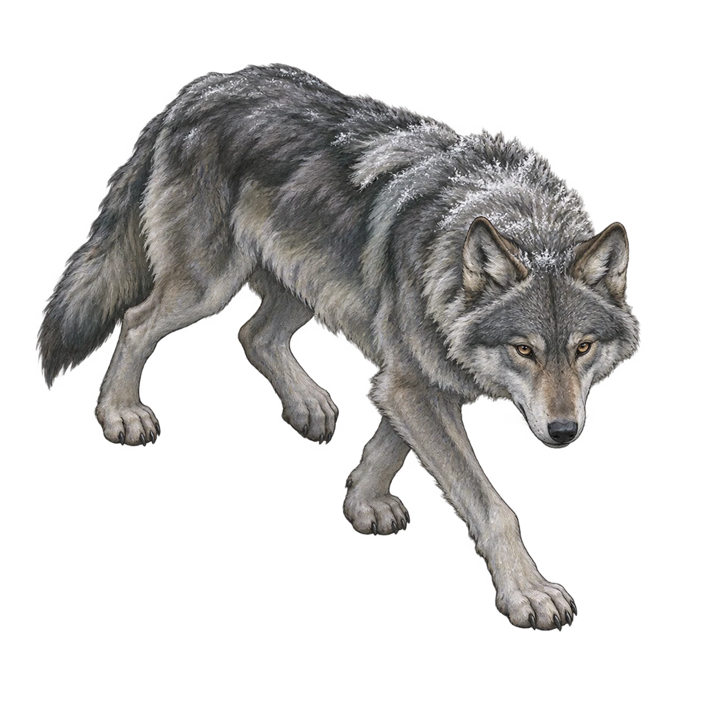
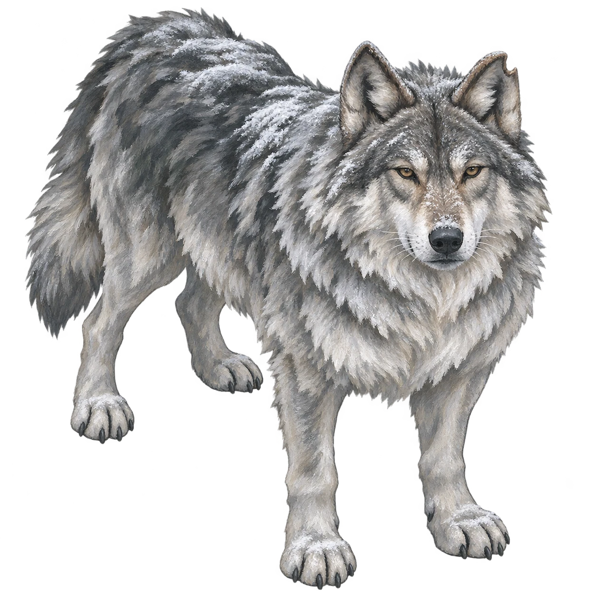

Караван Белой Ночи
Карты и фигурки ведущего
Игровой комплект
6 игроков · 7 игроков · 8 игроков
Карта кампании

Поля боя


Герои


Персонажи ведущего


Противники


Молодой волк 3Волк Трёх Чаш 5Волк Трёх Чаш 3Волк Трёх Чаш 4Волк Трёх Чаш 1Волк Трёх Чаш 5Волк Трёх Чаш 2Молодой волк 2Волк Трёх Чаш 4Волк Трёх Чаш 6Волк Трёх Чаш 2Волк Трёх Чаш 6Волк Трёх Чаш 3Волк Трёх Чаш 1Молодой волк 1Волк Трёх Чаш 4Молодой волк 4Волк Трёх Чаш 8Волк Трёх Чаш 7Волк Трёх Чаш 3Волк Трёх Чаш 2Волк Трёх Чаш 1

ПереярокВожак Белая
Белая